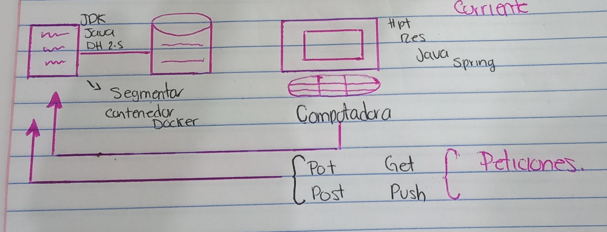
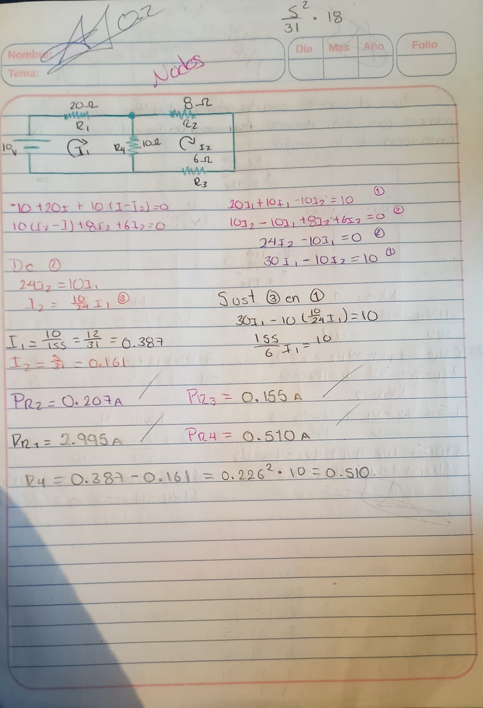
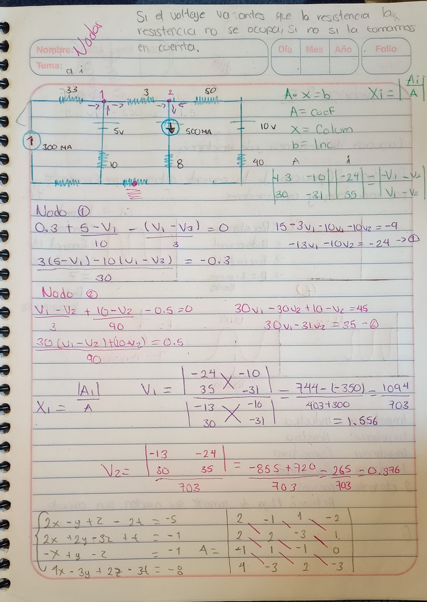
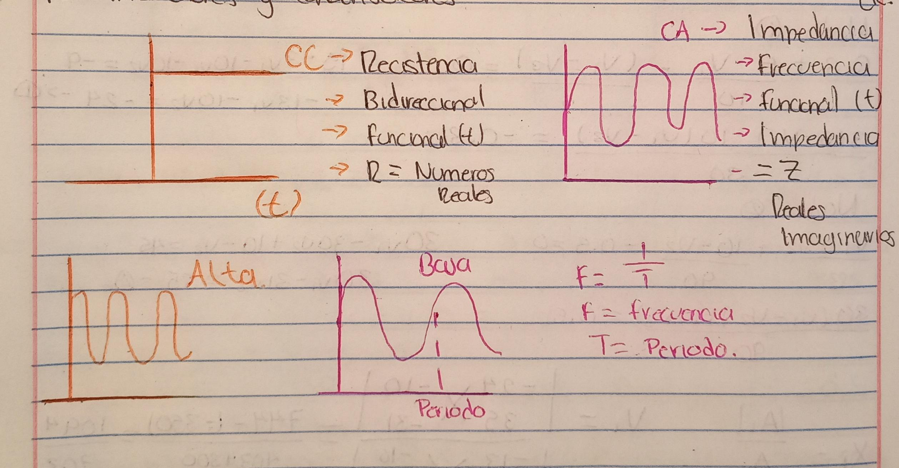
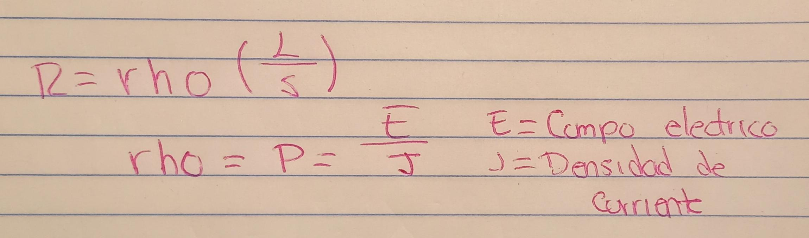

Telecomunicaciones
Existen dos principales bases de datos Relacional, No Renacional,SQL,NOSQL,BSD SQL, estan ligados entre si
Protocolo STPP: peticion PUT es una condicion entre ambas, push es muy afuerza
HTTP,FTP,TCP/IP,SMTP, BPS es el servidor, FTP es el respaldo de base de datos a gestionar
Parametros
Analisis de Nodos
Potencia Electrica: La potencia electrica se va a entender como algo que calcula la cantidad de energia electrica que transfiere de una funta que la genera a un elemento que la consume.
Potencia disipada: Esta es igual a la diferencia de potencial V a la que está sometido multiplicada por la intensidad de corriente I que lo atraviesa.
Potencia suministrada: Es el producto de su tension por la corriente que circula en la rama donde esta se encuentra
Fuentes Independiente: Volataje corriente controlados por voltaje y corriente,Funte dependiente fuentes de voltaje y de cooriente.
Ejercicio1 de Nodos
2do Ejercicio Nodos
Corriente Alterna
Impedancia: Es la resistencia de un circuito con la cual circula la corriente electrica
Reactancia: Opcion de la corriente alterna especificamente por inductores y condensadores
Resistividad: Esta toma en cuenta (L) longitud del conducto expresada en (m), (s) seccion del conductor expresado en (mlm^2)
Tipos de impedancia: Inductiva,Resistiva,Capacitiva,Equivalente, constan de 2 elementos activos y pasivos el pasivo se refiere al flujo que aporta un circuito
Graficas de Corrientes
Formula de Resistividad
Circuitos RLC
Los circuitos RLC son circuitos que contienen 2 elementos de energía capacitarse e inductores y se dividen en serie, paralelo y circuitos mixtos corriente alterna y corriente externa
En estos tambien podemos encontrar bobinas,Una bobina produce fuerza automotriz la inductancia depende de las características físicas de un inductor, geometría, microestructura
En estos circuitos tambien tenemos que estar concientes de que tiene una capacitancia que es un componente de un circuito para componer energía en muchos tamaños 2 placas de un material conductor, es la relación de cada carga
La capacitancia es la relación que existe entre la carga de un condensador o capacitador, medido en coulomb, y su potencial eléctrico o voltaje,medido en voltios.Se expresa en unidades faradio(F).
La inductancia es la propiedad de los circuitos eléctricos mediante la cual se produce una fuerza electromotriz, debido al paso de la corriente eléctrica y al la variación del campo magnético asociado.Esta fuerza electromotriz puede generar dos denómenos bien diferenciados entre si.